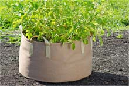

Step 2: Choose Your Containers
Now you’ve chosen a nice, sunny location to grow your plants in, the next essential element to any urban garden is what containers you’ll use. There are several types that can do the job. What you choose will depend on what aesthetic you want as well as what kind of space you have.
Locations to Consider
Hanging Baskets. Hanging baskets are a great way of creating a tidy, clean and professional looking outdoor area. They are also up off the ground and out of the way.
Half Round Baskets. Similar to a hanging basket, these are up off the ground. However, these mount on a wall and make a great decoration.
Trellises. A Trellis is a wonderful tool for a vertical garden where you don’t have much space. Grow your plants up rather than out.
Repurposed Household Containers. A great way to add a little character and help the planet, too, repurposed items can make great containers. You just need to make sure they have good drainage and you’re good to go.

Traditional Pots. These work well since growing plants is what they were designed for. The usually have holes for drainage built right in.
Wooden Containers. Wood containers come in a variety of sizes making them great for any space. Plus, it’s easy to drill holes in the bottom for drainage.
- 
Grow Bags. Made of flexible, lightweight fabric. Grow bags allows roots to breathe and prevents overwatering or overheating. They also fold up for easy storage.
Self-Watering Containers. If you have trouble remembering to water consistenly, these babies will change your life. These can be a DIY project or you can buy them.
Containers That Fit Over Railings. Only have a balcony railing to use? Balcony pots to the rescue. BAM!
Wall Containers. This has got to be one of my new recent obsessions. I believe vertical gardening is the way of the future. Why not put a perfectly good wall to use?